Tutti i materiali
Cerca un tema o filtra per area e classe. Ogni pagina del materiale porta direttamente al prodotto.
2.633 materiali
Tema
Classe
Festa dei lavoratori – Scheda didattica classe quarta e quinta: testo con spazi vuoti e crucipuzzle
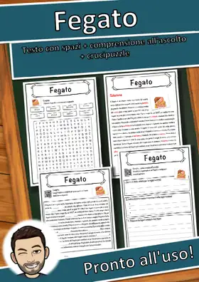
Fegato – Scheda didattica classe quarta e quinta: testo con spazi vuoti e crucipuzzle
Etiopia – Scheda didattica classe quarta e quinta: testo con spazi vuoti e crucipuzzle
Eruzione vulcanica – Scheda didattica classe quarta e quinta: testo con spazi vuoti e crucipuzzle
Economia – Scheda didattica classe quarta e quinta: testo con spazi vuoti e crucipuzzle
Domatore – Scheda didattica classe quarta e quinta: testo con spazi vuoti e crucipuzzle
Darmstadtio – Scheda didattica classe quarta e quinta: testo con spazi vuoti e crucipuzzle
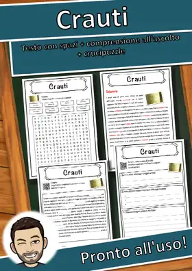
Crauti – Scheda didattica classe quarta e quinta: testo con spazi vuoti e crucipuzzle
Compasso – Scheda didattica classe quarta e quinta: testo con spazi vuoti e crucipuzzle
Commercio equo e solidale – Scheda didattica classe quarta e quinta: testo con spazi vuoti e crucipuzzle
Comedian Harmonists – Scheda didattica classe quarta e quinta: testo con spazi vuoti e crucipuzzle
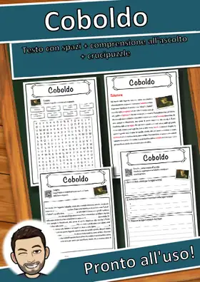
Coboldo – Scheda didattica classe quarta e quinta: testo con spazi vuoti e crucipuzzle
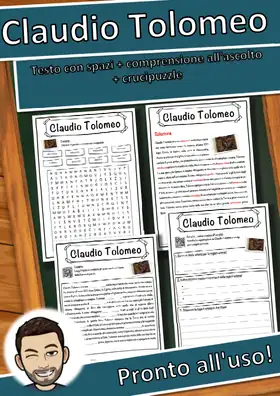
Claudio Tolomeo – Scheda didattica classe quarta e quinta: testo con spazi vuoti e crucipuzzle
Cittadino – Scheda didattica classe quarta e quinta: testo con spazi vuoti e crucipuzzle
Cesio – Scheda didattica classe quarta e quinta: testo con spazi vuoti e crucipuzzle
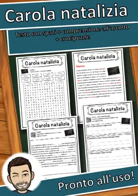
Carola natalizia – Scheda didattica classe quarta e quinta: testo con spazi vuoti e crucipuzzle
Carinzia – Scheda didattica classe quarta e quinta: testo con spazi vuoti e crucipuzzle
Capo Verde – Scheda didattica classe quarta e quinta: testo con spazi vuoti e crucipuzzle
Buco nero – Scheda didattica classe quarta e quinta: testo con spazi vuoti e crucipuzzle
Brevetto – Scheda didattica classe quarta e quinta: testo con spazi vuoti e crucipuzzle
Berkelio – Scheda didattica classe quarta e quinta: testo con spazi vuoti e crucipuzzle
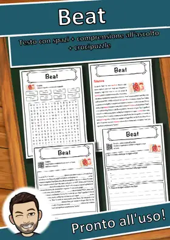
Beat – Scheda didattica classe quarta e quinta: testo con spazi vuoti e crucipuzzle
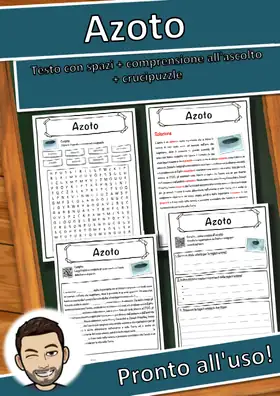
Azoto – Scheda didattica classe quarta e quinta: testo con spazi vuoti e crucipuzzle
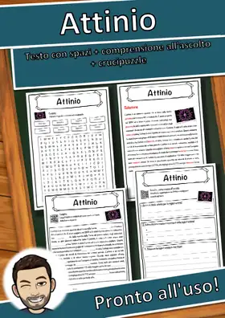
Attinio – Scheda didattica classe quarta e quinta: testo con spazi vuoti e crucipuzzle
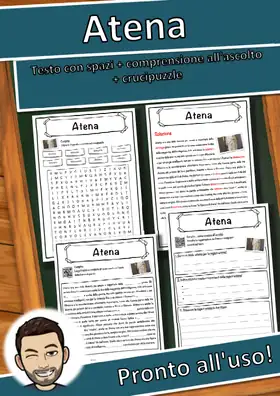
Atena – Scheda didattica classe quarta e quinta: testo con spazi vuoti e crucipuzzle
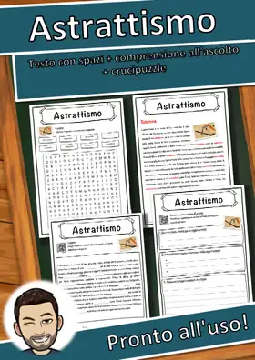
Astrattismo – Scheda didattica classe quarta e quinta: testo con spazi vuoti e crucipuzzle
Arte romanica – Scheda didattica classe quarta e quinta: testo con spazi vuoti e crucipuzzle
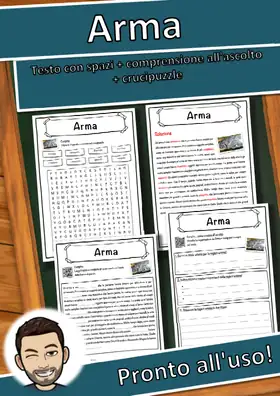
Arma – Scheda didattica classe quarta e quinta: testo con spazi vuoti e crucipuzzle
Anoressia nervosa – Scheda didattica classe quarta e quinta: testo con spazi vuoti e crucipuzzle
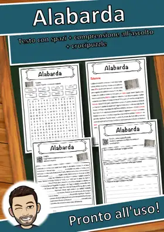
Alabarda – Scheda didattica classe quarta e quinta: testo con spazi vuoti e crucipuzzle
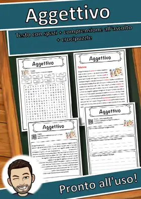
Aggettivo – Scheda didattica classe quarta e quinta: testo con spazi vuoti e crucipuzzle
Afrodite – Scheda didattica classe quarta e quinta: testo con spazi vuoti e crucipuzzle
Ada Lovelace – Scheda didattica classe quarta e quinta: testo con spazi vuoti e crucipuzzle
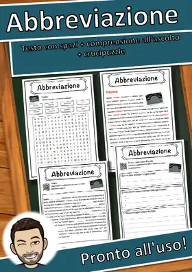
Abbreviazione – Scheda didattica classe quarta e quinta: testo con spazi vuoti e crucipuzzle
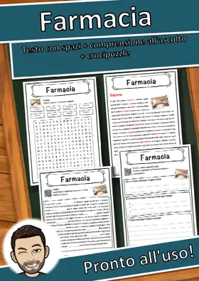
Farmacia – Scheda didattica classe quarta e quinta: testo con spazi vuoti e crucipuzzle
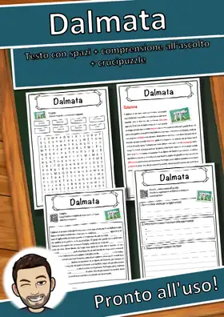
Dalmata – Scheda didattica classe quarta e quinta: testo con spazi vuoti e crucipuzzle
Creta – Scheda didattica classe quarta e quinta: testo con spazi vuoti e crucipuzzle
Corda – Scheda didattica classe quarta e quinta: testo con spazi vuoti e crucipuzzle
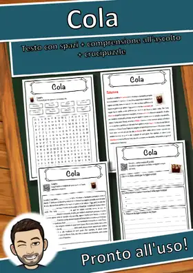
Cola – Scheda didattica classe quarta e quinta: testo con spazi vuoti e crucipuzzle
Città libera dell'Impero – Scheda didattica classe quarta e quinta: testo con spazi vuoti e crucipuzzle
Cieco – Scheda didattica classe quarta e quinta: testo con spazi vuoti e crucipuzzle
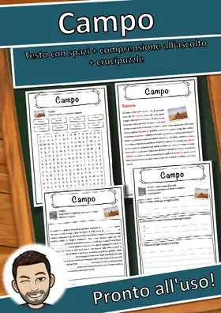
Campo – Scheda didattica classe quarta e quinta: testo con spazi vuoti e crucipuzzle
Calcio – Scheda didattica classe quarta e quinta: testo con spazi vuoti e crucipuzzle
Batteria – Scheda didattica classe quarta e quinta: testo con spazi vuoti e crucipuzzle
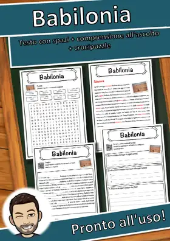
Babilonia – Scheda didattica classe quarta e quinta: testo con spazi vuoti e crucipuzzle
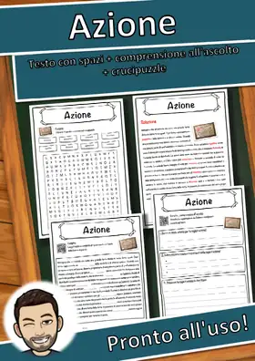
Azione – Scheda didattica classe quarta e quinta: testo con spazi vuoti e crucipuzzle
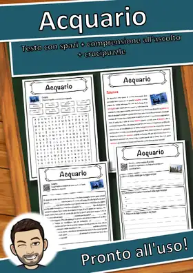
Acquario – Scheda didattica classe quarta e quinta: testo con spazi vuoti e crucipuzzle
Pan – Scheda didattica classe quarta e quinta: testo con spazi vuoti e crucipuzzle
Nessun materiale trovato: prova con un'altra parola o un altro filtro.